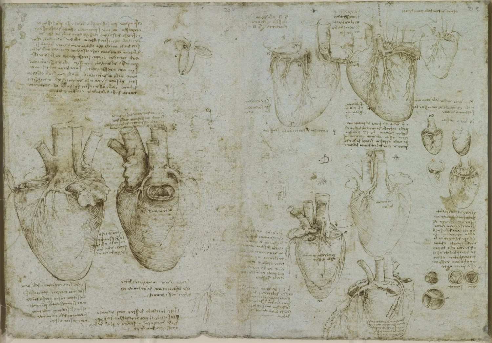
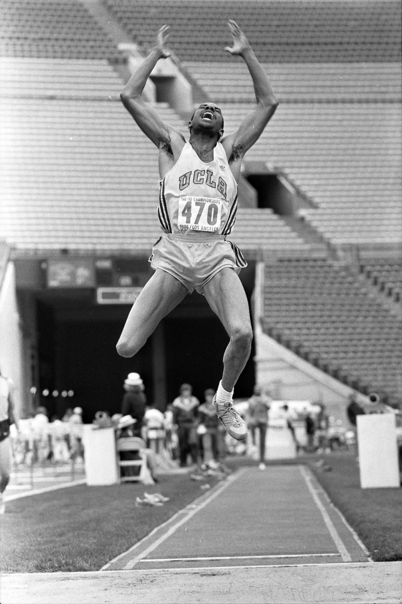

The short version
The single number most tightly tied to how long you live is not your weight, your blood pressure, or how much you can lift. It is how fit your heart and lungs are. In a study of 122,000 people, the least fit had roughly five times the death rate of the fittest, a worse statistical risk than smoking, diabetes, or heart disease carried in the same study. And fitter was always better, with no ceiling anyone could find. Mandsager 2018 good
This guide is about the two parts of fitness a barbell leaves out. One is cardio, the work that builds that heart and those lungs and, more than almost anything else you can do, buys you years. The other is stretching, or really mobility, the range your joints can move through and actually control. People get both wrong in the same direction. They skip the cardio that adds years, and grind away at the stretching that adds almost nothing.
If you read Big Enough, the muscle guide this one pairs with, you already know the shape of the argument. Every lever helps up to a point, then quietly stops paying you back. Cardio and stretching are the same story, with higher stakes. This is the part that decides how long you last and how well you move.
And the same trap waits at the end of each. The people doing the most are usually spending it in the wrong place: long static stretches that do not prevent injury, a step count invented by a pedometer company in 1965, hours of joyless cardio when twenty minutes of the right kind would do more. The goal is not the maximum. It is the dose where the line goes flat, almost all of the prize for almost none of the cost.
If you did only these six things, you would have almost all of the heart health and the range a body needs, for a few hours a week.
That is the whole engine and the whole chassis. The chapters that follow are just the manual: what each lever does, how hard to pull it, and the exact point where pulling harder stops paying you back.
Your heart is the number
Of every measurement in medicine, the one most tightly tied to how long you live is one most people have never seen: your cardiorespiratory fitness, how well your heart, lungs, and muscles move oxygen when you push. The fitter you are, the longer you tend to live, and the curve does not bend back down.

In 2018, cardiologists at the Cleveland Clinic put 122,000 people on a treadmill, measured their fitness, and followed them for years. The least fit quartile died at about five times the rate of the fittest. Laid beside the usual villains in the same study, being unfit carried a larger statistical risk of death than smoking, than diabetes, than coronary artery disease. Mandsager 2018 good
Mortality risk relative to the fittest group, from the same study. Being in the least fit group sat above every traditional risk factor it was measured against.
Read it as a strong association, not a literal head to head: this was a study of people sent for a stress test, so some of the gap is that sick people are unfit because they are sick. The direction, though, is not subtle. Mandsager 2018.
And there was no top end. Even the elite, the fittest two percent, outlived the merely very fit. The authors put it plainly: there is no observed level of fitness above which the survival benefit stops.
This is an observational study, not a clean experiment, so the exact five-times figure is an association, not proof that pushing your fitness from good to great causes an 80 percent drop in your odds of dying. But fitness predicting survival is one of the most repeated findings in all of epidemiology. Each one-MET step up in fitness, roughly one extra flight of stairs' worth of capacity, tracks with about 13 percent lower mortality across the studies that have looked. Kodama 2009 strong The size is fuzzy. The direction is not in doubt.
Here is the part that should change your week: this is not a fixed trait you were issued at birth. Cardiorespiratory fitness is one of the most trainable numbers in your body. The rest of this guide is how little it takes to move it.
How little it takes
The best news in exercise science is that the first few minutes are worth the most. The jump from doing nothing to doing a little is the single biggest return in preventive medicine, far bigger than the jump from a lot to even more.
In a pooled study of 661,000 people, simply moving a little, less than the official minimum, already cut the risk of dying by 20 percent. Hitting the standard guideline cut it by about 31 percent. The benefit bottomed out at three to five times the guideline, and then stayed flat: people doing ten times the minimum lived no longer, and crucially, no shorter. Arem 2015 strong
Risk of death against how much you move. The drop is almost all in the first hour or two a week, and it never bends back up, even at ten times the minimum.
If you do nothing right now, the highest-return change available to you in any corner of your health is a daily walk. Arem 2015.
The official target behind those numbers is 150 to 300 minutes a week of moderate activity (a brisk walk, easy cycling, anything that warms you up but lets you still talk), or half that if it is vigorous, plus a couple of strength sessions. U.S. Physical Activity Guidelines But the shape of the curve matters more than the target. Even 15 minutes a day of moderate movement was tied to about three extra years of life in a study of 416,000 people. Wen 2011 good
So before you optimize anything, here is a tool to see where you sit on that curve. Drag it.
How much cardio buys you
interactiveSteps: 7,000, not 10,000
The 10,000-step goal in your phone is not science. It is a marketing slogan from 1965. A Japanese company sold a pedometer called the manpo-kei, the "10,000-steps meter," and picked the number because it was round, memorable, and the character for 10,000 looks a little like a walking person. There was no study behind it. It got baked into fitness trackers and slowly came to feel official. Tudor-Locke mixed
What the data actually show is the now-familiar shape: the benefit climbs steeply out of the basement, then flattens. In a meta-analysis of 47,000 people, going from about 3,500 steps a day to about 7,800 cut the death rate nearly in half. Past roughly 7,000 to 8,000, the line bends and more steps add little. In older women, the benefit leveled off around 7,500. Paluch 2022 Lee 2019 strong The newest synthesis, 57 studies deep, lands on 7,000 as the realistic target. Ding 2025
Risk of death by daily step count, split into four equal groups. The drop is steep up to about 7,800 steps, then it nearly stops. A shorter bar is a lower risk of dying.
The gap that matters is between 4,000 and 8,000, not between 8,000 and 12,000. At 3,000 steps, getting to 7,000 is one of the best things you can do for your lifespan. At 9,000, a tenth thousand is a rounding error.
Easy miles and a little hard
Two speeds build almost everything worth having: a lot of easy, and a little genuinely hard. The easy work builds the engine's size. The hard work builds its ceiling. Most people do neither and instead live in a moderate middle that is too hard to recover from and too easy to drive much adaptation.
The easy base (zone 2)
Most of your cardio should be easy enough to hold a conversation. Coaches call this zone 2: a steady effort just below the point where your breathing breaks up, roughly 60 to 70 percent of your maximum heart rate, where the burn stays low. At that pace your body spends weeks quietly building more mitochondria (the tiny furnaces in your cells that turn fuel and oxygen into energy) and more of the small blood vessels that feed them, lifting their density by 10 to 20 percent in people new to training. It is the cheap, low-damage volume that everything else rests on.
This is the right setting for most of your cardio minutes, so it helps to know yours. Put in your age, and your resting heart rate if you know it, for a sharper estimate.
Your training heart-rate zones
interactiveZone 2 has become a wellness buzzword, sold as a magic mitochondrial window, so be a little skeptical. A 2025 review in Sports Medicine, titled, fairly, "Much Ado About Zone 2," concluded the evidence does not support that exact zone as the optimal intensity for building mitochondria, and that minute for minute, harder work does as much or more. Storoschuk 2025 mixed The reason elite athletes do so much easy work is that they need enormous volume, and easy is the only pace you can pile up without breaking. For the rest of us the precise heart-rate window matters far less than two simpler things: do a decent amount of easy aerobic work, and include some hard work. Walking the dog up a hill counts.
The hard part, and why it is not optional
The one number that most resists easy miles is VO2max, the top rate at which your body can take in and use oxygen, and the single fitness measure most tied to survival. Once you have a base, you cannot stroll your way to a higher one. You have to occasionally go hard.
The classic protocol is the Norwegian 4x4: four minutes at close to your limit (about 90 to 95 percent of max heart rate, hard enough that talking is out of the question), then three minutes easy, repeated four times. In an eight-week trial, the 4x4 group raised VO2max by about 7 percent, while a group doing the same total work at an easy steady pace improved essentially zero. Helgerud 2007 good
Change in VO2max over eight weeks. Same total work, split two ways. The intervals moved it; the easy steady pace did not.
You do not need much of it. One or two hard sessions a week is the lever; easy volume carries the rest. Helgerud 2007.
And it does not have to be brutal four-minute blocks. A gentler on-ramp called 10-20-30 (repeated rounds of 30 seconds easy, 20 moderate, then 10 near a sprint) cut runners' training volume in half and still raised their VO2max and lowered their blood pressure and cholesterol. Gunnarsson 2012 good Head to head, hard intervals beat steady cardio for VO2max by a small margin, for a lot less time. Milanovic 2015 strong
Endurance athletes have converged on a ratio that works for the rest of us too: about 80 percent easy, 20 percent hard, and very little in the murky middle. Mostly easy, a little brutal. Seiler 2006 mixed One free bonus of doing this for a few months: your resting heart rate drifts down as your heart gets stronger, a quiet, no-cost sign that it is working. Fox 2007
Will cardio eat your gains?
The fear that cardio melts away hard-won muscle is mostly a myth, with one real exception. On average, adding endurance work to a lifting program does not meaningfully blunt muscle growth. What it dents is power, the explosive top end, and even that is manageable.
In the main meta-analysis on training both at once, people who lifted and did cardio grew nearly as much muscle as people who only lifted; the difference was small and not statistically reliable. Strength took a slightly bigger hit. Power, the ability to move fast and explode, was clearly blunted. Wilson 2012 good
Effect sizes for lifting alone versus lifting plus cardio. Size barely moves. Power takes the real hit.
The hit to muscle size was not statistically reliable, which is to say it may be nothing. Power is the real casualty, and most people are not chasing power. Wilson 2012; Murach 2016.
Two things decide how much cardio costs you. The first is the kind. Running interferes the most, because the pounding and the muscle damage overlap with what your legs are already trying to recover from; cycling barely interferes at all. The second is the dose: the more often and the longer you do it, the bigger the bite. Keep both sane and the cost nearly disappears.
- Separate cardio from lifting. Different days, or at least 6 hours apart. The worst case is a hard run right before you squat.
- Pick low-impact while building muscle. Bike, incline walk, rower, elliptical over pavement running. Cycling is the gentlest on your gains.
- Keep hard cardio off leg day, and lift fresh. Do the thing you care most about first, when you are not tired.
- Eat enough. Much of "cardio killed my gains" is really an energy deficit. Fuel both jobs and the conflict mostly evaporates.
- Do not do a long, hard run immediately before heavy lower-body lifting. That is the one combination the research consistently punishes.
Can you do too much?
At the other extreme sits a worry that gets more headlines than it has earned: that a lot of endurance exercise damages the heart. There is a real signal buried in it, and a lot of overstatement piled on top.
The real part: lifelong, high-volume endurance athletes, think decades of marathons, show more atrial fibrillation (a heart-rhythm problem), more calcium in their coronary arteries, and small patches of scar more often than non-athletes. O'Keefe 2012 mixed
The overstated part: the famous study suggesting that hard runners die sooner rested on about two deaths, and its result was not statistically significant; the error bars ran from "much safer" all the way to "much more dangerous." Schnohr 2015 thin Bigger datasets find no penalty at all at high volumes, remember Arem's flat line at ten times the minimum. Even the athletes with high coronary calcium do not clearly die sooner; in them it seems to be the stable, less dangerous kind of plaque.
So, for basically everyone reading this, more is better. The plausible harms show up only at the far tail of decades-long, high-mileage sport, and even there they do not clearly shorten life. "Too much cardio" is a real question for the fifty-year-old lining up for their thirtieth marathon. It is not a reason for anyone else to skip the walk.
What stretching won't do
Start with the thing almost no one is told. When stretching makes you more flexible, your muscle has usually not gotten any longer. You have not stretched the rope. You have turned down the alarm.
For decades the picture was simple: a tight muscle is a short muscle, and stretching slowly lengthens it. Measure it carefully and that is mostly not what happens, at least over the weeks and months a normal person stretches. The muscle's actual stiffness barely changes. What changes is your tolerance: your nervous system learns the new position is safe and stops pulling the brake so early. The range is real. The mechanism is your brain, not longer tissue. Weppler 2010 Freitas 2018 good
Weeks of stretching let the same leg swing higher. The muscle (the line from hip to heel) is the same length both times. What moved is the point where it complains.
That reframes what stretching is for, and it explains why the three things people most expect from it do not show up.
It does not prevent injury
Static stretching before exercise, the toe-touch hold everyone was taught, does close to nothing for injury risk. In a review of 26,000 people across dozens of trials, stretching programs barely moved the injury rate. In the very same analysis, strength training cut injuries to about a third. Lauersen 2014 strong
Injury rate compared with doing nothing. Stretching lands right at no change. Strength training cuts it to about a third.
If you want to not get hurt, the evidence points at getting stronger, not bendier. Lauersen 2014.
It does not prevent soreness
Stretching before or after a workout does not meaningfully reduce next-day muscle soreness either. A Cochrane review of about 2,600 people found it shaved less than one point off a hundred-point soreness scale, which is to say nothing you would actually feel. Herbert 2011 strong
And right before lifting, it slightly weakens you
Held just before a hard effort, a long static stretch can leave you a touch weaker for that session. The effect is real but small, and only from long holds. Across more than 100 studies, stretching dropped strength by about 5 percent, and only when a muscle was held 60 seconds or more. Quick stretches followed by a proper warm-up cost nothing measurable, and the newest reviews call the real-world penalty minor. Simic 2013 Behm 2016 Warneke 2024 good Still, there is no reason to pay even a small tax right before your heaviest set.
Foam rolling lands in the same place: a real, small, short-lived bump in range, handy as a warm-up, with no evidence it "breaks up" or releases anything structural. Like stretching, the effect is your nervous system, not your tissue. Roll if it feels good and helps you move. Just do not expect it to remodel you. Wiewelhove 2019 mixed
Do flexible people live longer?
You may have seen the headlines: people who can sit down on the floor and stand back up without using their hands, or who score high on a "flexibility index," live longer. Those studies are real, and badly confounded. The sit-and-rise test mostly measures strength, balance, and not being overweight, all of which independently predict survival on their own. One of the flexibility-and-death studies had error bars so wide they were nearly meaningless (a hazard ratio quoted as 4.78, with a range running from 1.2 to 31.7). Nobody has shown that becoming more flexible adds a day to your life. Brito 2014 Araujo 2024 thin File it under "flexibility is a sign of fitness," not "stretching is longevity."
What actually keeps you moving
If stretching is mostly turning down an alarm, the better goal is mobility: range you can actually control with strength, not floppy, passive reach. And the best tool for building it is one you may already own.
Lift through a full range, and you barely need to stretch
Here is the finding that should save most people a lot of floor time. Strength training through a full range of motion builds about as much flexibility as stretching does, and adds strength on top. A 2021 review comparing the two found no meaningful difference in the range they produced. Afonso 2021 good An earlier trial found full-range lifting and static stretching gave the same gains in hip and knee range, except the lifters also got stronger. Morton 2011
A deep squat trains the same hip and ankle range a stretch would, under load, in a position you can control. Train the bottom of each lift, the lengthened part where the muscle is stretched under tension, and you are getting your mobility work for free. A growing line of research even suggests that lengthened position may be the best part of the rep for growth. Kassiano 2023 mixed The caveat worth keeping: that "lifting equals stretching" finding rests on a modest pile of trials, so call it strongly suggestive, not settled.

Controlled range beats floppy range
More passive flexibility is not automatically better. People who are very loose-jointed, the genuinely hypermobile, actually get hurt somewhat more, because range you cannot control with strength is a liability, not an asset. The aim is not to be bendy. It is to own the range you have, to be strong at the end of it. That is the whole difference between flexibility and mobility.
When stretching is worth it
Stretching earns its place in one clear situation: you genuinely cannot get into a position you need, a deep squat, hands fully overhead, and full-range strength work alone is not enough to unlock it. Then it works, and reasonably fast. Flexibility is trainable; meaningful range shows up in about four weeks and keeps accruing over a few months, and a held stretch (around 60 seconds, a few times a week) and the fancier contract-and-relax version produce about the same gains. Garber 2011 good Better still is loaded stretching, taking the muscle into a deep position under a light weight, which builds tolerance and strength at the same time. eccentric training
And before you train, warm up by moving, not holding: leg swings, lunges, a few lighter ramp-up sets. A dynamic warm-up actually nudges performance up a little, where a long static one nudges it down. Behm 2016 good
If your real goal is just to stay uninjured, two things have actual evidence behind them. A structured dynamic warm-up program (the soccer world's FIFA 11+ is the famous one) cut injuries by around 30 percent. Soligard 2008 good And specifically strengthening the muscles you tend to tear, the Nordic curl for hamstrings being the standout, roughly halved those injuries across several trials, though a later reanalysis argues the true number is softer and the question is not fully closed. van Dyk 2019 Impellizzeri 2021 mixed
- Train every lift through its full range. Deep squats, full pulls, real overhead work. That is most of your mobility work, done.
- Warm up by moving. 5 to 10 minutes of dynamic prep before you train, not long static holds.
- Stretch the joint you actually can't move. Targeted, ideally loaded, about 60 seconds a few times a week, until the range is there.
- A general flexibility routine, if you enjoy it. Yoga is fine movement and good for balance and calm. Wieland 2022 Just do not expect injury or longevity payoffs from it.
- Long static holds right before lifting, stretching to prevent soreness, or stretching to "fix your posture." None of those deliver.
Putting it together
Here is the whole thing as a week, sized to sit around lifting rather than fight it. It assumes three or four lifting days, the kind Big Enough lays out, with cardio and mobility tucked into the gaps.
| Day | Lifting | Cardio and mobility | Why |
|---|---|---|---|
| Mon | Upper body | 5 to 10 min dynamic warm-up | lift fresh |
| Tue | — | Easy zone 2, 30 to 45 min (bike or incline walk) | cheap aerobic base |
| Wed | Lower body | warm-up, optional easy walk | keep legs for squats |
| Thu | Upper body | Hard intervals after lifting (4x4 or 10-20-30) | the one truly hard session |
| Fri | Lower or full | warm-up | away from the hard cardio |
| Sat | — | Longer easy zone 2, 45 to 60 min | the volume day |
| Sun | rest | walk, light mobility if tight | recover |
It comes out to mostly easy cardio, one hard session, a daily walk toward 7,000 steps, a moving warm-up, and targeted stretching only where you actually need it. Two or three cardio sessions, one of them hard, plus steps. That is the engine maintained and the chassis kept moving, for a few hours a week.
If even that is too much right now, the floor that still works is small: a 15-minute daily walk and one short hard effort a week. Getting off the bottom of the fitness scale is the single biggest move on this page. Everything after it is optimization.
And then the same quiet discipline this site keeps circling back to: knowing when to stop. You do not need 10,000 steps, you need 7,000. You do not need an hour of stretching, you need full-range lifts and a few targeted minutes. You do not need to fear cardio, and you do not need to run yourself into the ground; you need two or three solid sessions a week. The maximum is a trap in fitness the same way it is in muscle. The smart target is the flat part of the curve, where you have collected almost all of the years and almost all of the range, and you can go live the life you kept the body for.
Keep the heart strong, keep the joints moving, and have the sense to call it enough.Still Moving
Sources, and how to read them
Every number in this guide is tied to a real study, cited where it appears. The research was told to refute the thesis, not flatter it, so the corrections (zone 2 is oversold, "too much cardio" is mostly unproven, the flexibility-longevity link is confounded) were left visible above.
The full list, 40 sources, grouped by topic
- Fitness and how long you live
- Mandsager K, et al. (2018). Cardiorespiratory fitness and long-term mortality. JAMA Network Open. jamanetwork.com
- Kodama S, et al. (2009). Cardiorespiratory fitness as a predictor of mortality: meta-analysis. JAMA. jamanetwork.com
- How much, and steps
- Arem H, et al. (2015). Leisure-time physical activity and mortality: dose-response. JAMA Internal Medicine. jamanetwork.com
- Wen CP, et al. (2011). Minimum activity for reduced mortality and longer life. The Lancet. PubMed
- U.S. Dept. of Health (2018). Physical Activity Guidelines for Americans, 2nd ed. PDF
- Paluch AE, et al. (2022). Daily steps and all-cause mortality: meta-analysis. Lancet Public Health. thelancet.com
- Lee I-M, et al. (2019). Steps and mortality in older women. JAMA Internal Medicine. jamanetwork.com
- Ding D, Stamatakis E, et al. (2025). Daily steps and health outcomes: dose-response meta-analysis. Lancet Public Health. PubMed
- Tudor-Locke C. Where the 10,000-step target came from (Yamasa manpo-kei, 1965). news-medical.net
- Easy and hard: zone 2, intervals, polarized
- Storoschuk KL, et al. (2025). Much Ado About Zone 2. Sports Medicine. PubMed
- Helgerud J, et al. (2007). Aerobic high-intensity intervals improve VO2max more than moderate training. Med Sci Sports Exerc. PubMed
- Milanovic Z, et al. (2015). HIIT vs continuous endurance for VO2max: meta-analysis. Sports Medicine. PubMed
- Gunnarsson TP, Bangsbo J (2012). The 10-20-30 training concept. J Appl Physiol. PubMed
- Seiler S, Kjerland GO (2006). Training-intensity distribution in elite endurance athletes (the 80/20 pattern). Scand J Med Sci Sports. PubMed
- Cardio and your gains, and the far edge
- Wilson JM, et al. (2012). Concurrent training interference: meta-analysis. J Strength Cond Res. journals.lww.com
- Murach KA, Bagley JR (2016). Hypertrophy with concurrent training: contrary evidence for interference. Sports Medicine. Springer
- O'Keefe JH, et al. (2012). Potential adverse cardiovascular effects of excessive endurance exercise. Mayo Clin Proc. PubMed
- Schnohr P, et al. (2015). Dose of jogging and long-term mortality (Copenhagen). J Am Coll Cardiol. PubMed
- Stretching, and what it does not do
- Lauersen JB, et al. (2014). Exercise to prevent sports injuries: meta-analysis (stretching vs strength). Br J Sports Med. PubMed
- Herbert RD, de Noronha M, Kamper SJ (2011). Stretching to prevent or reduce muscle soreness. Cochrane. cochranelibrary.com
- Simic L, et al. (2013). Pre-exercise static stretching and performance: meta-analysis. Scand J Med Sci Sports. PubMed
- Behm DG, et al. (2016). Acute effects of stretching on performance, ROM, and injury. Appl Physiol Nutr Metab. cdnsciencepub.com
- Behm DG, Chaouachi A (2011). Acute effects of static and dynamic stretching on performance. Eur J Appl Physiol. PubMed
- Warneke K, Lohmann LH (2024). Acute stretching and performance: the real-world deficit is small. PubMed
- Weppler CH, Magnusson SP (2010). Increasing muscle extensibility: length or modifying sensation? Phys Ther. PubMed
- Freitas SR, et al. (2018). Stretching and the passive torque-angle curve. Scand J Med Sci Sports. PubMed
- Wiewelhove T, et al. (2019). Foam rolling on performance and recovery: meta-analysis. Front Physiol. PMC6465761
- Brito LBB, et al. (2014). Sitting-rising test and all-cause mortality. Eur J Prev Cardiol. PubMed
- Araujo CGS, et al. (2024). Body flexibility and survival (Flexindex). Scand J Med Sci Sports. PubMed
- Mobility, range, and preventing injury
- Afonso J, et al. (2021). Strength training versus stretching for range of motion: meta-analysis. Healthcare. PMC8067745
- Morton SK, et al. (2011). Resistance training vs static stretching: flexibility and strength. J Strength Cond Res. journals.lww.com
- Kassiano W, et al. (2023). Range of motion, lengthened training, and hypertrophy. Med Sci Sports Exerc. PubMed
- Pedrosa GF, et al. (2022). Training at long muscle lengths and hypertrophy. Eur J Sport Sci. Wiley
- Garber CE, et al. (2011). ACSM position stand: quantity and quality of exercise (flexibility dose). Med Sci Sports Exerc. PubMed
- Afonso J, et al. (2022). Eccentric training for flexibility and strength (loaded stretching). Front Physiol. frontiersin.org
- Soligard T, et al. (2008). Comprehensive warm-up (FIFA 11+) to prevent injuries. BMJ. bmj.com
- van Dyk N, Behan FP, Whiteley R (2019). Nordic hamstring exercise and injury: meta-analysis. Br J Sports Med. PubMed
- Impellizzeri FM, et al. (2021). Why methods matter: a reappraisal of the Nordic-curl evidence. J Clin Epidemiol. PubMed
- Wieland LS, et al. (2022). Yoga for chronic non-specific low back pain. Cochrane. cochranelibrary.com
- Tracking it
- Fox K, et al. (2007). Resting heart rate as a risk factor and fitness marker. J Am Coll Cardiol. review